<!DOCTYPE html>
<html>
<head><meta name="generator" content="Hexo 3.9.0">
  <meta charset="utf-8">
  
<!-- Google Analytics -->
<script type="text/javascript">
(function(i,s,o,g,r,a,m){i['GoogleAnalyticsObject']=r;i[r]=i[r]||function(){
(i[r].q=i[r].q||[]).push(arguments)},i[r].l=1*new Date();a=s.createElement(o),
m=s.getElementsByTagName(o)[0];a.async=1;a.src=g;m.parentNode.insertBefore(a,m)
})(window,document,'script','//www.google-analytics.com/analytics.js','ga');

ga('create', 'UA-86850493-1', 'auto');
ga('send', 'pageview');

</script>
<!-- End Google Analytics -->


  
  <title>用Kubernetes建立实验集群 | Geek boood&#39;s blog</title>
  <meta name="viewport" content="width=device-width, initial-scale=1, maximum-scale=1">
  <meta name="description" content="我在大三下选修了软件定义网络这门选修课，其期末作业是使用Kubernetes来搭建一个实验集群。目前在互联网上有很多使用Kubernetes搭建集群的教程，但是我看了很多都感觉非常复杂。于是我参照官网的教程完成了这篇实验报告。">
<meta property="og:type" content="article">
<meta property="og:title" content="用Kubernetes建立实验集群">
<meta property="og:url" content="https://geekboood.github.io/2019/07/30/用Kubernetes建立实验集群/index.html">
<meta property="og:site_name" content="Geek boood&#39;s blog">
<meta property="og:description" content="我在大三下选修了软件定义网络这门选修课，其期末作业是使用Kubernetes来搭建一个实验集群。目前在互联网上有很多使用Kubernetes搭建集群的教程，但是我看了很多都感觉非常复杂。于是我参照官网的教程完成了这篇实验报告。">
<meta property="og:locale" content="default">
<meta property="og:image" content="https://geekboood.github.io/2019/07/30/用Kubernetes建立实验集群/1.png">
<meta property="og:image" content="https://geekboood.github.io/2019/07/30/用Kubernetes建立实验集群/2.png">
<meta property="og:image" content="https://geekboood.github.io/2019/07/30/用Kubernetes建立实验集群/3.png">
<meta property="og:image" content="https://geekboood.github.io/2019/07/30/用Kubernetes建立实验集群/4.png">
<meta property="og:image" content="https://geekboood.github.io/2019/07/30/用Kubernetes建立实验集群/5.png">
<meta property="og:image" content="https://geekboood.github.io/2019/07/30/用Kubernetes建立实验集群/6.png">
<meta property="og:image" content="https://geekboood.github.io/2019/07/30/用Kubernetes建立实验集群/7.png">
<meta property="og:image" content="https://geekboood.github.io/2019/07/30/用Kubernetes建立实验集群/8.png">
<meta property="og:image" content="https://geekboood.github.io/2019/07/30/用Kubernetes建立实验集群/9.png">
<meta property="og:image" content="https://geekboood.github.io/2019/07/30/用Kubernetes建立实验集群/10.png">
<meta property="og:image" content="https://geekboood.github.io/2019/07/30/用Kubernetes建立实验集群/11.png">
<meta property="og:image" content="https://geekboood.github.io/2019/07/30/用Kubernetes建立实验集群/12.png">
<meta property="og:image" content="https://geekboood.github.io/2019/07/30/用Kubernetes建立实验集群/13.png">
<meta property="og:image" content="https://geekboood.github.io/2019/07/30/用Kubernetes建立实验集群/14.png">
<meta property="og:updated_time" content="2019-07-31T04:07:37.866Z">
<meta name="twitter:card" content="summary">
<meta name="twitter:title" content="用Kubernetes建立实验集群">
<meta name="twitter:description" content="我在大三下选修了软件定义网络这门选修课，其期末作业是使用Kubernetes来搭建一个实验集群。目前在互联网上有很多使用Kubernetes搭建集群的教程，但是我看了很多都感觉非常复杂。于是我参照官网的教程完成了这篇实验报告。">
<meta name="twitter:image" content="https://geekboood.github.io/2019/07/30/用Kubernetes建立实验集群/1.png">
  
    <link rel="alternate" href="/atom.xml" title="Geek boood&#39;s blog" type="application/atom+xml">
  
  
    <link rel="icon" href="/favicon.png">
  
  
    <link href="//fonts.googleapis.com/css?family=Source+Code+Pro" rel="stylesheet" type="text/css">
  
  <link rel="stylesheet" href="/css/style.css">
</head>
</html>
<body>
  <div id="container">
    <div id="wrap">
      <header id="header">
  <div id="banner"></div>
  <div id="header-outer" class="outer">
    <div id="header-title" class="inner">
      <h1 id="logo-wrap">
        <a href="/" id="logo">Geek boood&#39;s blog</a>
      </h1>
      
    </div>
    <div id="header-inner" class="inner">
      <nav id="main-nav">
        <a id="main-nav-toggle" class="nav-icon"></a>
        
          <a class="main-nav-link" href="/">Home</a>
        
          <a class="main-nav-link" href="/archives">Archives</a>
        
      </nav>
      <nav id="sub-nav">
        
          <a id="nav-rss-link" class="nav-icon" href="/atom.xml" title="RSS Feed"></a>
        
        <a id="nav-search-btn" class="nav-icon" title="Search"></a>
      </nav>
      <div id="search-form-wrap">
        <form action="//google.com/search" method="get" accept-charset="UTF-8" class="search-form"><input type="search" name="q" class="search-form-input" placeholder="Search"><button type="submit" class="search-form-submit">&#xF002;</button><input type="hidden" name="sitesearch" value="https://geekboood.github.io"></form>
      </div>
    </div>
  </div>
</header>
      <div class="outer">
        <section id="main"><article id="post-用Kubernetes建立实验集群" class="article article-type-post" itemscope itemprop="blogPost">
  <div class="article-meta">
    <a href="/2019/07/30/用Kubernetes建立实验集群/" class="article-date">
  <time datetime="2019-07-29T16:00:00.000Z" itemprop="datePublished">2019-07-30</time>
</a>
    
  </div>
  <div class="article-inner">
    
    
      <header class="article-header">
        
  
    <h1 class="article-title" itemprop="name">
      用Kubernetes建立实验集群
    </h1>
  

      </header>
    
    <div class="article-entry" itemprop="articleBody">
      
        <p>我在大三下选修了软件定义网络这门选修课，其期末作业是使用Kubernetes来搭建一个实验集群。目前在互联网上有很多使用Kubernetes搭建集群的教程，但是我看了很多都感觉非常复杂。于是我参照官网的教程完成了这篇实验报告。</p>
<a id="more"></a>
<h2 id="实验环境描述"><a href="#实验环境描述" class="headerlink" title="实验环境描述"></a>实验环境描述</h2><p>在本实验中使用三台安装了ubuntu server的虚拟机来创建集群，其中第一台作为集群的master，后两台作为集群的node。各台虚拟机的详细情况见下表。服务器宿主机安装的ESXi，拥有双路CPU以及64G内存。虚拟机每台分配单路双核CPU，2G内存以及20G硬盘。虚拟网卡型号选择vmxnet3(ESXi支持的万兆虚拟网卡)。</p>
<table>
<thead>
<tr>
<th>Host name</th>
<th>IP address</th>
<th>Virtual machine name</th>
<th>Role</th>
</tr>
</thead>
<tbody><tr>
<td>Ubuntu-server</td>
<td>192.168.1.14</td>
<td>Ubuntu server 1</td>
<td>Master</td>
</tr>
<tr>
<td>Ubuntu-server-2</td>
<td>192.168.1.15</td>
<td>Ubuntu server 2</td>
<td>Node</td>
</tr>
<tr>
<td>Ubuntu-server-3</td>
<td>192.168.1.16</td>
<td>Ubuntu server 3</td>
<td>Node</td>
</tr>
</tbody></table>
<h2 id="在虚拟机上安装Ubuntu-Server"><a href="#在虚拟机上安装Ubuntu-Server" class="headerlink" title="在虚拟机上安装Ubuntu Server"></a>在虚拟机上安装Ubuntu Server</h2><p>在每台虚拟机上安装ubuntu server，并按照上表手动分配IP地址，安装过程中勾选SSH服务器选项。过程如下图。<br>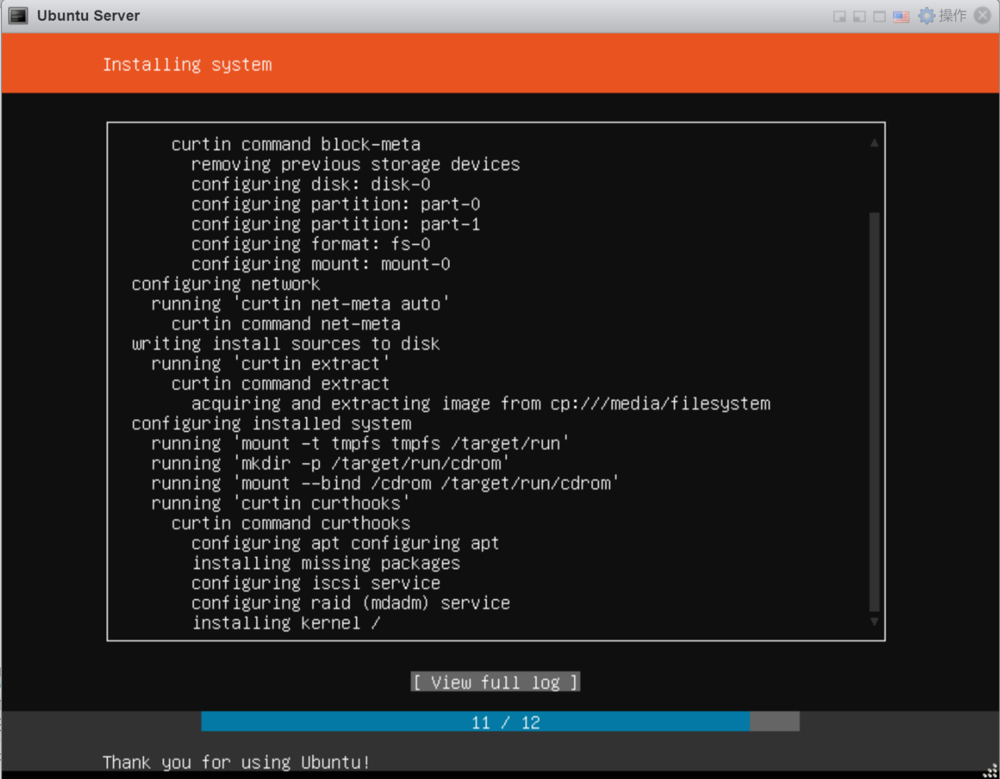<br>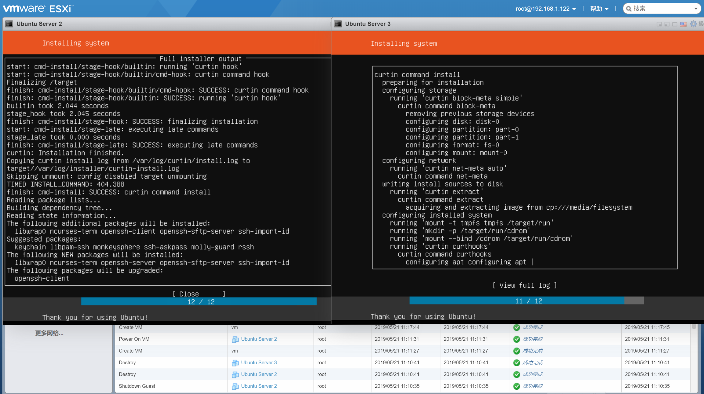<br>在每台主机上安装docker和open-vm-tools，具体命令为</p>
<figure class="highlight plain"><table><tr><td class="gutter"><pre><span class="line">1</span><br></pre></td><td class="code"><pre><span class="line">sudo apt install docker.io open-vm-tools</span><br></pre></td></tr></table></figure>

<p>然后禁用swap，命令为</p>
<figure class="highlight plain"><table><tr><td class="gutter"><pre><span class="line">1</span><br></pre></td><td class="code"><pre><span class="line">sudo swapoff -a</span><br></pre></td></tr></table></figure>

<p>之后在/etc/fstab中注释掉swap文件的挂载项。</p>
<p>服务器配置完后开始在每台虚拟机上安装kubeadm，具体步骤参照官网</p>
<figure class="highlight plain"><table><tr><td class="gutter"><pre><span class="line">1</span><br></pre></td><td class="code"><pre><span class="line">https://kubernetes.io/docs/setup/independent/install-kubeadm/</span><br></pre></td></tr></table></figure>

<p>由于我没有使用root用户，所有每条命令前都要使用sudo提升权限。<br>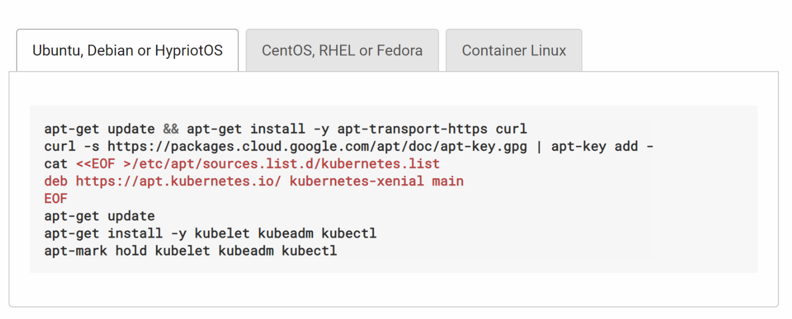<br>安装完成后在master上面初始化集群并配置CIDR，具体命令为</p>
<figure class="highlight plain"><table><tr><td class="gutter"><pre><span class="line">1</span><br></pre></td><td class="code"><pre><span class="line">sudo kubeadm init --pod-network-cidr 10.100.0.0/16</span><br></pre></td></tr></table></figure>

<p>产生log很长，如下方文本区域所示。</p>
<figure class="highlight plain"><table><tr><td class="gutter"><pre><span class="line">1</span><br><span class="line">2</span><br><span class="line">3</span><br><span class="line">4</span><br><span class="line">5</span><br><span class="line">6</span><br><span class="line">7</span><br><span class="line">8</span><br><span class="line">9</span><br><span class="line">10</span><br><span class="line">11</span><br><span class="line">12</span><br><span class="line">13</span><br><span class="line">14</span><br><span class="line">15</span><br><span class="line">16</span><br><span class="line">17</span><br><span class="line">18</span><br><span class="line">19</span><br><span class="line">20</span><br><span class="line">21</span><br><span class="line">22</span><br><span class="line">23</span><br><span class="line">24</span><br><span class="line">25</span><br><span class="line">26</span><br><span class="line">27</span><br><span class="line">28</span><br><span class="line">29</span><br><span class="line">30</span><br><span class="line">31</span><br><span class="line">32</span><br><span class="line">33</span><br><span class="line">34</span><br><span class="line">35</span><br><span class="line">36</span><br><span class="line">37</span><br><span class="line">38</span><br><span class="line">39</span><br><span class="line">40</span><br><span class="line">41</span><br><span class="line">42</span><br><span class="line">43</span><br><span class="line">44</span><br><span class="line">45</span><br><span class="line">46</span><br><span class="line">47</span><br><span class="line">48</span><br><span class="line">49</span><br><span class="line">50</span><br><span class="line">51</span><br><span class="line">52</span><br><span class="line">53</span><br><span class="line">54</span><br><span class="line">55</span><br><span class="line">56</span><br><span class="line">57</span><br><span class="line">58</span><br><span class="line">59</span><br><span class="line">60</span><br><span class="line">61</span><br><span class="line">62</span><br><span class="line">63</span><br><span class="line">64</span><br><span class="line">65</span><br><span class="line">66</span><br></pre></td><td class="code"><pre><span class="line">[init] Using Kubernetes version: v1.14.2</span><br><span class="line">[preflight] Running pre-flight checks</span><br><span class="line">[WARNING IsDockerSystemdCheck]: detected &quot;cgroupfs&quot; as the Docker cgroup driver. The recommended driver is &quot;systemd&quot;. Please follow the guide at https://kubernetes.io/docs/setup/cri/</span><br><span class="line">[preflight] Pulling images required for setting up a Kubernetes cluster</span><br><span class="line">[preflight] This might take a minute or two, depending on the speed of your internet connection</span><br><span class="line">[preflight] You can also perform this action in beforehand using &apos;kubeadm config images pull&apos;</span><br><span class="line">[kubelet-start] Writing kubelet environment file with flags to file &quot;/var/lib/kubelet/kubeadm-flags.env&quot;</span><br><span class="line">[kubelet-start] Writing kubelet configuration to file &quot;/var/lib/kubelet/config.yaml&quot;</span><br><span class="line">[kubelet-start] Activating the kubelet service</span><br><span class="line">[certs] Using certificateDir folder &quot;/etc/kubernetes/pki&quot;</span><br><span class="line">[certs] Generating &quot;front-proxy-ca&quot; certificate and key</span><br><span class="line">[certs] Generating &quot;front-proxy-client&quot; certificate and key</span><br><span class="line">[certs] Generating &quot;etcd/ca&quot; certificate and key</span><br><span class="line">[certs] Generating &quot;etcd/peer&quot; certificate and key</span><br><span class="line">[certs] etcd/peer serving cert is signed for DNS names [user-server localhost] and IPs [192.168.1.14 127.0.0.1 ::1]</span><br><span class="line">[certs] Generating &quot;etcd/healthcheck-client&quot; certificate and key</span><br><span class="line">[certs] Generating &quot;apiserver-etcd-client&quot; certificate and key</span><br><span class="line">[certs] Generating &quot;etcd/server&quot; certificate and key</span><br><span class="line">[certs] etcd/server serving cert is signed for DNS names [user-server localhost] and IPs [192.168.1.14 127.0.0.1 ::1]</span><br><span class="line">[certs] Generating &quot;ca&quot; certificate and key</span><br><span class="line">[certs] Generating &quot;apiserver&quot; certificate and key</span><br><span class="line">[certs] apiserver serving cert is signed for DNS names [user-server kubernetes kubernetes.default kubernetes.default.svc kubernetes.default.svc.cluster.local] and IPs [10.96.0.1 192.168.1.14]</span><br><span class="line">[certs] Generating &quot;apiserver-kubelet-client&quot; certificate and key</span><br><span class="line">[certs] Generating &quot;sa&quot; key and public key</span><br><span class="line">[kubeconfig] Using kubeconfig folder &quot;/etc/kubernetes&quot;</span><br><span class="line">[kubeconfig] Writing &quot;admin.conf&quot; kubeconfig file</span><br><span class="line">[kubeconfig] Writing &quot;kubelet.conf&quot; kubeconfig file</span><br><span class="line">[kubeconfig] Writing &quot;controller-manager.conf&quot; kubeconfig file</span><br><span class="line">[kubeconfig] Writing &quot;scheduler.conf&quot; kubeconfig file</span><br><span class="line">[control-plane] Using manifest folder &quot;/etc/kubernetes/manifests&quot;</span><br><span class="line">[control-plane] Creating static Pod manifest for &quot;kube-apiserver&quot;</span><br><span class="line">[control-plane] Creating static Pod manifest for &quot;kube-controller-manager&quot;</span><br><span class="line">[control-plane] Creating static Pod manifest for &quot;kube-scheduler&quot;</span><br><span class="line">[etcd] Creating static Pod manifest for local etcd in &quot;/etc/kubernetes/manifests&quot;</span><br><span class="line">[wait-control-plane] Waiting for the kubelet to boot up the control plane as static Pods from directory &quot;/etc/kubernetes/manifests&quot;. This can take up to 4m0s</span><br><span class="line">[apiclient] All control plane components are healthy after 20.003859 seconds</span><br><span class="line">[upload-config] storing the configuration used in ConfigMap &quot;kubeadm-config&quot; in the &quot;kube-system&quot; Namespace</span><br><span class="line">[kubelet] Creating a ConfigMap &quot;kubelet-config-1.14&quot; in namespace kube-system with the configuration for the kubelets in the cluster</span><br><span class="line">[upload-certs] Skipping phase. Please see --experimental-upload-certs</span><br><span class="line">[mark-control-plane] Marking the node user-server as control-plane by adding the label &quot;node-role.kubernetes.io/master=&apos;&apos;&quot;</span><br><span class="line">[mark-control-plane] Marking the node user-server as control-plane by adding the taints [node-role.kubernetes.io/master:NoSchedule]</span><br><span class="line">[bootstrap-token] Using token: m45tm8.zn9e2p2sc8tww0u1</span><br><span class="line">[bootstrap-token] Configuring bootstrap tokens, cluster-info ConfigMap, RBAC Roles</span><br><span class="line">[bootstrap-token] configured RBAC rules to allow Node Bootstrap tokens to post CSRs in order for nodes to get long term certificate credentials</span><br><span class="line">[bootstrap-token] configured RBAC rules to allow the csrapprover controller automatically approve CSRs from a Node Bootstrap Token</span><br><span class="line">[bootstrap-token] configured RBAC rules to allow certificate rotation for all node client certificates in the cluster</span><br><span class="line">[bootstrap-token] creating the &quot;cluster-info&quot; ConfigMap in the &quot;kube-public&quot; namespace</span><br><span class="line">[addons] Applied essential addon: CoreDNS</span><br><span class="line">[addons] Applied essential addon: kube-proxy</span><br><span class="line"></span><br><span class="line">Your Kubernetes control-plane has initialized successfully!</span><br><span class="line"></span><br><span class="line">To start using your cluster, you need to run the following as a regular user:</span><br><span class="line"></span><br><span class="line">  mkdir -p $HOME/.kube</span><br><span class="line">  sudo cp -i /etc/kubernetes/admin.conf $HOME/.kube/config</span><br><span class="line">  sudo chown $(id -u):$(id -g) $HOME/.kube/config</span><br><span class="line"></span><br><span class="line">You should now deploy a pod network to the cluster.</span><br><span class="line">Run &quot;kubectl apply -f [podnetwork].yaml&quot; with one of the options listed at:</span><br><span class="line">  https://kubernetes.io/docs/concepts/cluster-administration/addons/</span><br><span class="line"></span><br><span class="line">Then you can join any number of worker nodes by running the following on each as root:</span><br><span class="line"></span><br><span class="line">kubeadm join 192.168.1.14:6443 --token m45tm8.zn9e2p2sc8tww0u1 \</span><br><span class="line">    --discovery-token-ca-cert-hash sha256:22b8e0acb8db0c111a8d534e62e7c2ebe46055baeac437d5062eec23aa41f6f1</span><br></pre></td></tr></table></figure>

<p>按照log中的提示，将集群的配置文件拷贝到当前用户的目录下。<br>然后使用</p>
<figure class="highlight plain"><table><tr><td class="gutter"><pre><span class="line">1</span><br></pre></td><td class="code"><pre><span class="line">KUBECONFIG=/etc/kubernetes/admin.conf kubectl apply -f https://raw.githubusercontent.com/cloudnativelabs/kube-router/master/daemonset/kubeadm-kuberouter-all-features.yaml</span><br></pre></td></tr></table></figure>

<p>命令来配置Pod网络。<br>配置完master后，使用SSH登陆其他两个节点，并安装log中提示使用kubeadm join命令来加入集群。过程中产生的log如下方文本区域所示。</p>
<figure class="highlight plain"><table><tr><td class="gutter"><pre><span class="line">1</span><br><span class="line">2</span><br><span class="line">3</span><br><span class="line">4</span><br><span class="line">5</span><br><span class="line">6</span><br><span class="line">7</span><br><span class="line">8</span><br><span class="line">9</span><br><span class="line">10</span><br><span class="line">11</span><br><span class="line">12</span><br><span class="line">13</span><br><span class="line">14</span><br><span class="line">15</span><br><span class="line">16</span><br><span class="line">17</span><br></pre></td><td class="code"><pre><span class="line">user@user-server-2:~$ sudo kubeadm join 192.168.1.14:6443 --token m45tm8.zn9e2p2sc8tww0u1     --discovery-token-ca-cert-hash sha256:22b8e0acb8db0c111a8d534e62e7c2ebe46055baeac437d5062eec23aa41f6f1</span><br><span class="line">[preflight] Running pre-flight checks</span><br><span class="line">        [WARNING Service-Docker]: docker service is not enabled, please run &apos;systemctl enable docker.service&apos;</span><br><span class="line">        [WARNING IsDockerSystemdCheck]: detected &quot;cgroupfs&quot; as the Docker cgroup driver. The recommended driver is &quot;systemd&quot;. Please follow the guide at https://kubernetes.io/docs/setup/cri/</span><br><span class="line">[preflight] Reading configuration from the cluster...</span><br><span class="line">[preflight] FYI: You can look at this config file with &apos;kubectl -n kube-system get cm kubeadm-config -oyaml&apos;</span><br><span class="line">[kubelet-start] Downloading configuration for the kubelet from the &quot;kubelet-config-1.14&quot; ConfigMap in the kube-system namespace</span><br><span class="line">[kubelet-start] Writing kubelet configuration to file &quot;/var/lib/kubelet/config.yaml&quot;</span><br><span class="line">[kubelet-start] Writing kubelet environment file with flags to file &quot;/var/lib/kubelet/kubeadm-flags.env&quot;</span><br><span class="line">[kubelet-start] Activating the kubelet service</span><br><span class="line">[kubelet-start] Waiting for the kubelet to perform the TLS Bootstrap...</span><br><span class="line"></span><br><span class="line">This node has joined the cluster:</span><br><span class="line">* Certificate signing request was sent to apiserver and a response was received.</span><br><span class="line">* The Kubelet was informed of the new secure connection details.</span><br><span class="line"></span><br><span class="line">Run &apos;kubectl get nodes&apos; on the control-plane to see this node join the cluster.</span><br></pre></td></tr></table></figure>

<p>在两个node上配置完后，回到master，使用</p>
<figure class="highlight plain"><table><tr><td class="gutter"><pre><span class="line">1</span><br></pre></td><td class="code"><pre><span class="line">sudo kubectl get nodes</span><br></pre></td></tr></table></figure>

<p>来获取集群相关信息。集群状态如下图所示。<br>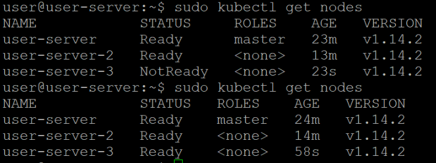</p>
<h2 id="安装Kubernetes-Dashboard"><a href="#安装Kubernetes-Dashboard" class="headerlink" title="安装Kubernetes Dashboard"></a>安装Kubernetes Dashboard</h2><p>然后按照教程安装Kubernetes Dashboard，用于集群的可视化管理。具体方法采用的是</p>
<figure class="highlight plain"><table><tr><td class="gutter"><pre><span class="line">1</span><br></pre></td><td class="code"><pre><span class="line">https://github.com/kubernetes/dashboard</span><br></pre></td></tr></table></figure>

<p>的官方教程。然后使用</p>
<figure class="highlight plain"><table><tr><td class="gutter"><pre><span class="line">1</span><br></pre></td><td class="code"><pre><span class="line">sudo kubectl create serviceaccount dashboard-admin -n kube-system</span><br></pre></td></tr></table></figure>

<p>命令创建一个Service Account，并使用</p>
<figure class="highlight plain"><table><tr><td class="gutter"><pre><span class="line">1</span><br></pre></td><td class="code"><pre><span class="line">sudo kubectl describe secret -n kube-system dashboard-admin-token-</span><br></pre></td></tr></table></figure>

<p>命令来查看生成的token。<br>使用</p>
<figure class="highlight plain"><table><tr><td class="gutter"><pre><span class="line">1</span><br></pre></td><td class="code"><pre><span class="line">kubectl proxy</span><br></pre></td></tr></table></figure>

<p>命令打开代理，在master的浏览器中输入网址</p>
<figure class="highlight plain"><table><tr><td class="gutter"><pre><span class="line">1</span><br></pre></td><td class="code"><pre><span class="line">http://localhost:8001/api/v1/namespaces/kube-system/services/https:kubernetes-dashboard:/proxy/</span><br></pre></td></tr></table></figure>

<p>打开管理界面，并输入token登陆。<br>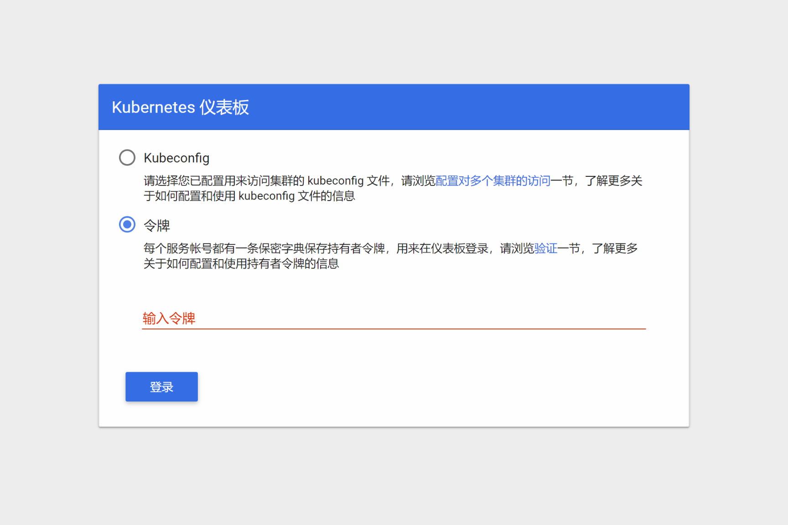<br>登陆成功后在Nodes中查看集群节点，如图所示共有三个节点。<br>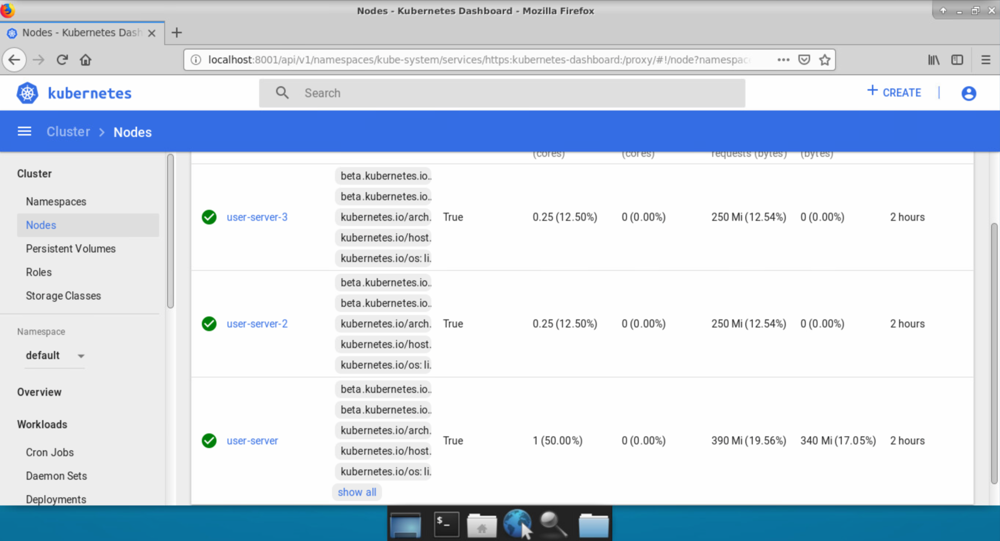</p>
<h2 id="安装Nginx服务"><a href="#安装Nginx服务" class="headerlink" title="安装Nginx服务"></a>安装Nginx服务</h2><p>使用</p>
<figure class="highlight plain"><table><tr><td class="gutter"><pre><span class="line">1</span><br></pre></td><td class="code"><pre><span class="line">sudo kubectl run my-nginx --image=nginx --replicas=2 --port=80</span><br></pre></td></tr></table></figure>

<p>命令来运行nginx服务，并使用</p>
<figure class="highlight plain"><table><tr><td class="gutter"><pre><span class="line">1</span><br></pre></td><td class="code"><pre><span class="line">sudo kubectl expose deployment my-nginx --port=80</span><br></pre></td></tr></table></figure>

<p>来将nginx服务暴露出来。安装后可以在Services中查看所有服务，并点击my-nginx查看详细信息。具体情况如下图所示。<br>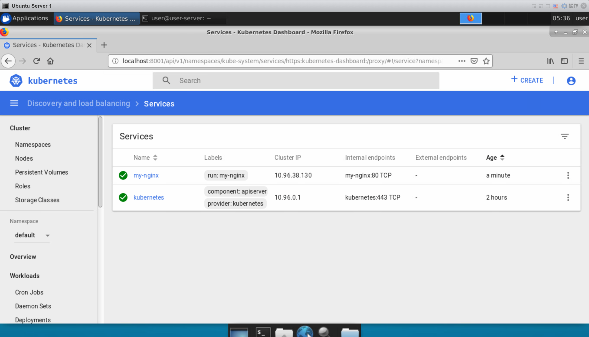<br>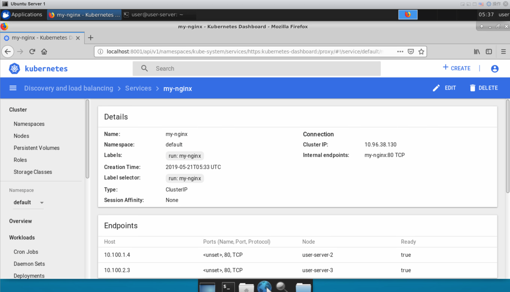<br>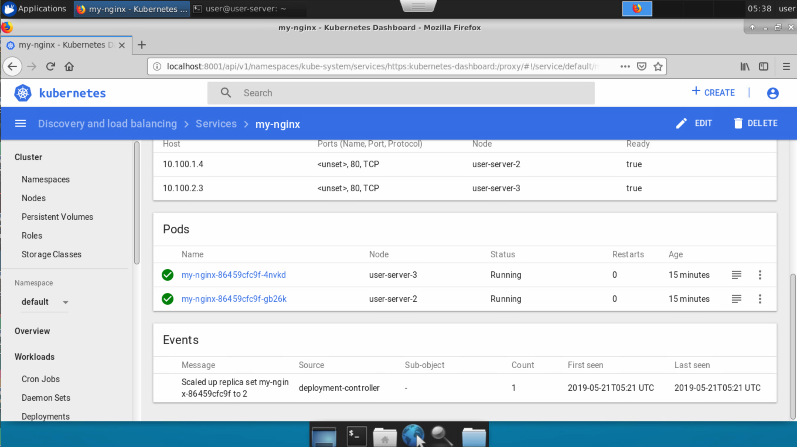<br>在浏览器中输入网址来访问Nginx服务。<br>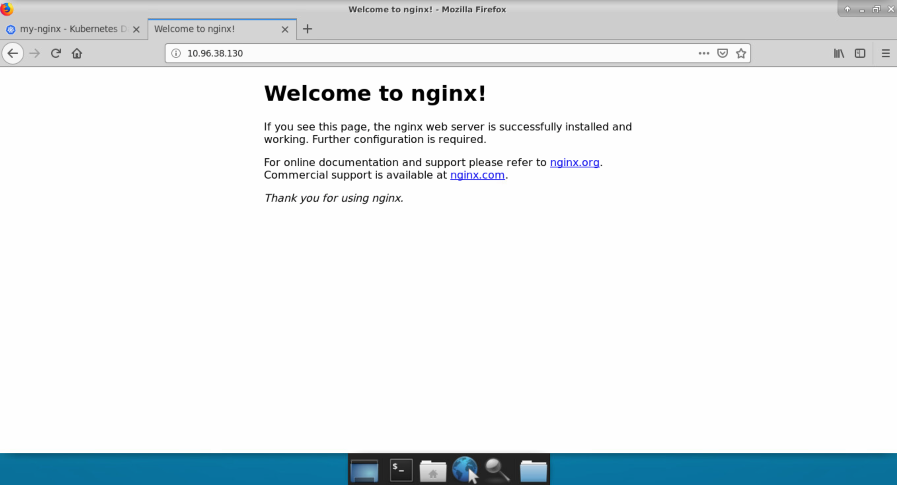<br>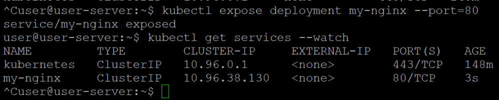</p>
<h2 id="kubernetes分析"><a href="#kubernetes分析" class="headerlink" title="kubernetes分析"></a>kubernetes分析</h2><p>然后我们可以研究下Kubernetes的具体情况。分别使用SSH登陆三台虚拟机，输入</p>
<figure class="highlight plain"><table><tr><td class="gutter"><pre><span class="line">1</span><br></pre></td><td class="code"><pre><span class="line">sudo docker container list</span><br></pre></td></tr></table></figure>

<p>来查看当前虚拟机的docker中有那些容器。具体情况如下图所示。<br>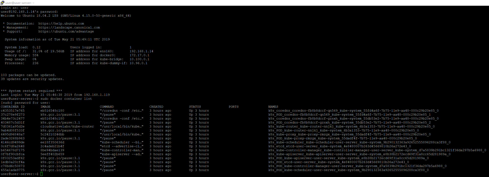<br>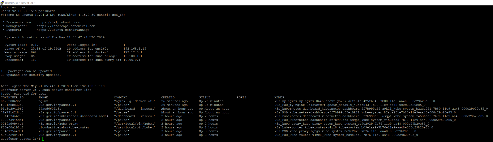<br>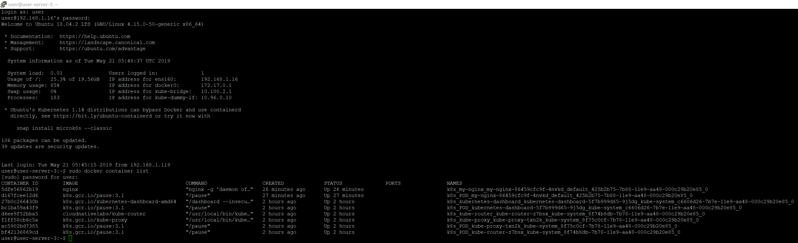<br>从中我们可以看到，在master中运行了Kubernetes的相关服务，如etcd等。在两个Node中都运行了一个Nginx的容器。</p>

      
    </div>
    <footer class="article-footer">
      <a data-url="https://geekboood.github.io/2019/07/30/用Kubernetes建立实验集群/" data-id="cjyqra6c500056xsfuasd4ni7" class="article-share-link">Share</a>
      
      
    </footer>
  </div>
  
    
<nav id="article-nav">
  
    <a href="/2019/07/30/BERT相关的一些实践/" id="article-nav-newer" class="article-nav-link-wrap">
      <strong class="article-nav-caption">Newer</strong>
      <div class="article-nav-title">
        
          BERT相关的一些实践
        
      </div>
    </a>
  
  
    <a href="/2019/07/30/移动端深度学习的现状与分析/" id="article-nav-older" class="article-nav-link-wrap">
      <strong class="article-nav-caption">Older</strong>
      <div class="article-nav-title">移动端深度学习的现状与分析</div>
    </a>
  
</nav>

  
</article>

</section>
        
          <aside id="sidebar">
  
    

  
    

  
    
  
    
  <div class="widget-wrap">
    <h3 class="widget-title">Archives</h3>
    <div class="widget">
      <ul class="archive-list"><li class="archive-list-item"><a class="archive-list-link" href="/archives/2019/07/">July 2019</a></li><li class="archive-list-item"><a class="archive-list-link" href="/archives/2017/09/">September 2017</a></li><li class="archive-list-item"><a class="archive-list-link" href="/archives/2017/03/">March 2017</a></li><li class="archive-list-item"><a class="archive-list-link" href="/archives/2017/02/">February 2017</a></li><li class="archive-list-item"><a class="archive-list-link" href="/archives/2017/01/">January 2017</a></li><li class="archive-list-item"><a class="archive-list-link" href="/archives/2015/07/">July 2015</a></li></ul>
    </div>
  </div>


  
    
  <div class="widget-wrap">
    <h3 class="widget-title">Recent Posts</h3>
    <div class="widget">
      <ul>
        
          <li>
            <a href="/2019/07/30/BERT相关的一些实践/">BERT相关的一些实践</a>
          </li>
        
          <li>
            <a href="/2019/07/30/用Kubernetes建立实验集群/">用Kubernetes建立实验集群</a>
          </li>
        
          <li>
            <a href="/2019/07/30/移动端深度学习的现状与分析/">移动端深度学习的现状与分析</a>
          </li>
        
          <li>
            <a href="/2017/09/04/微博与Elastic的亿级数据实践/">微博与elastic的亿级数据实践</a>
          </li>
        
          <li>
            <a href="/2017/03/25/使用微博语料训练词向量/">使用微博语料训练词向量</a>
          </li>
        
      </ul>
    </div>
  </div>

  
</aside>
        
      </div>
      <footer id="footer">
  
  <div class="outer">
    <div id="footer-info" class="inner">
      &copy; 2019 Geek boood<br>
      Powered by <a href="http://hexo.io/" target="_blank">Hexo</a>
    </div>
  </div>
</footer>
    </div>
    <nav id="mobile-nav">
  
    <a href="/" class="mobile-nav-link">Home</a>
  
    <a href="/archives" class="mobile-nav-link">Archives</a>
  
</nav>
    

<script src="//ajax.googleapis.com/ajax/libs/jquery/2.0.3/jquery.min.js"></script>


  <link rel="stylesheet" href="/fancybox/jquery.fancybox.css">
  <script src="/fancybox/jquery.fancybox.pack.js"></script>


<script src="/js/script.js"></script>


  </div>
</body>
</html>